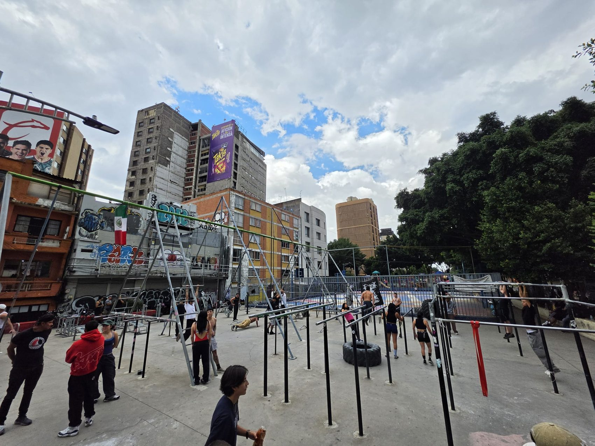
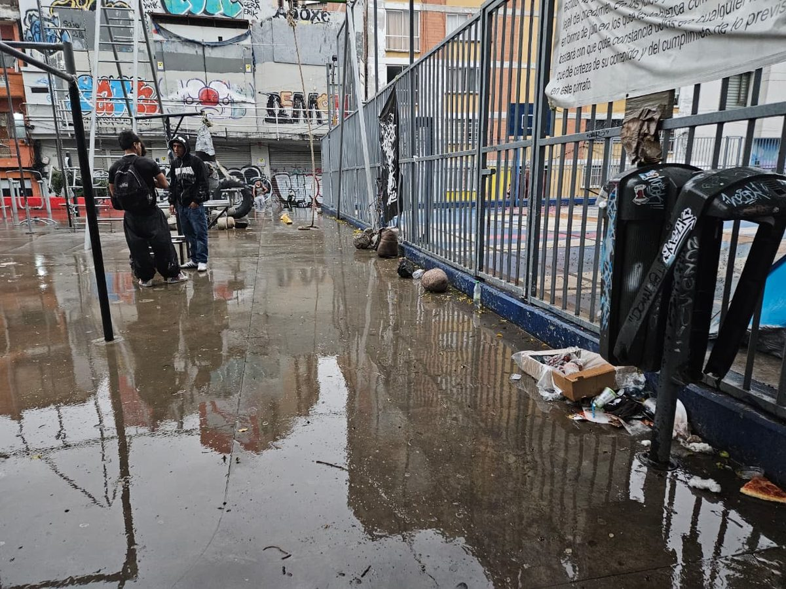
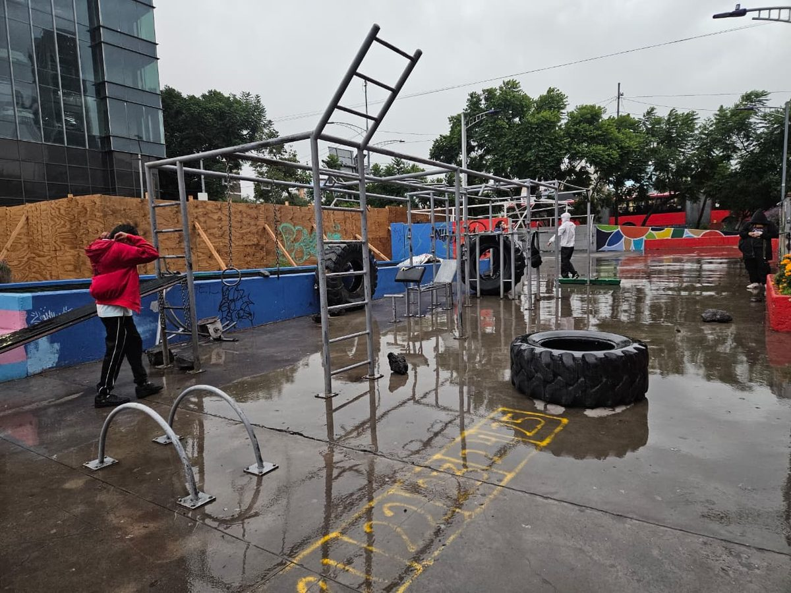
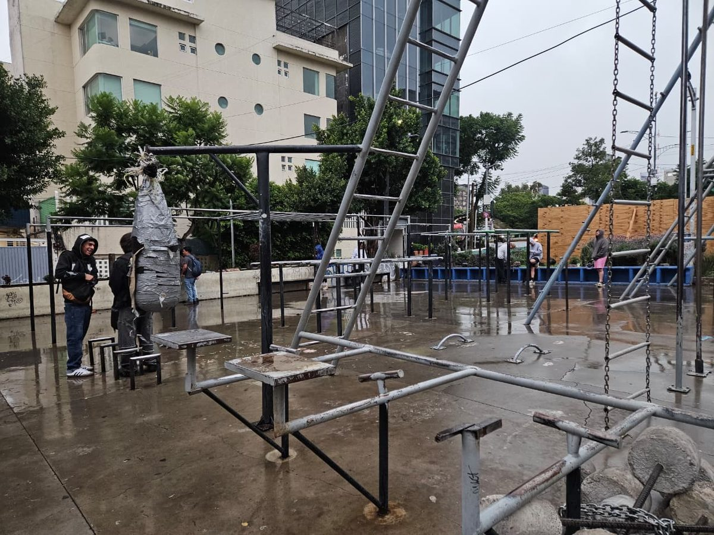
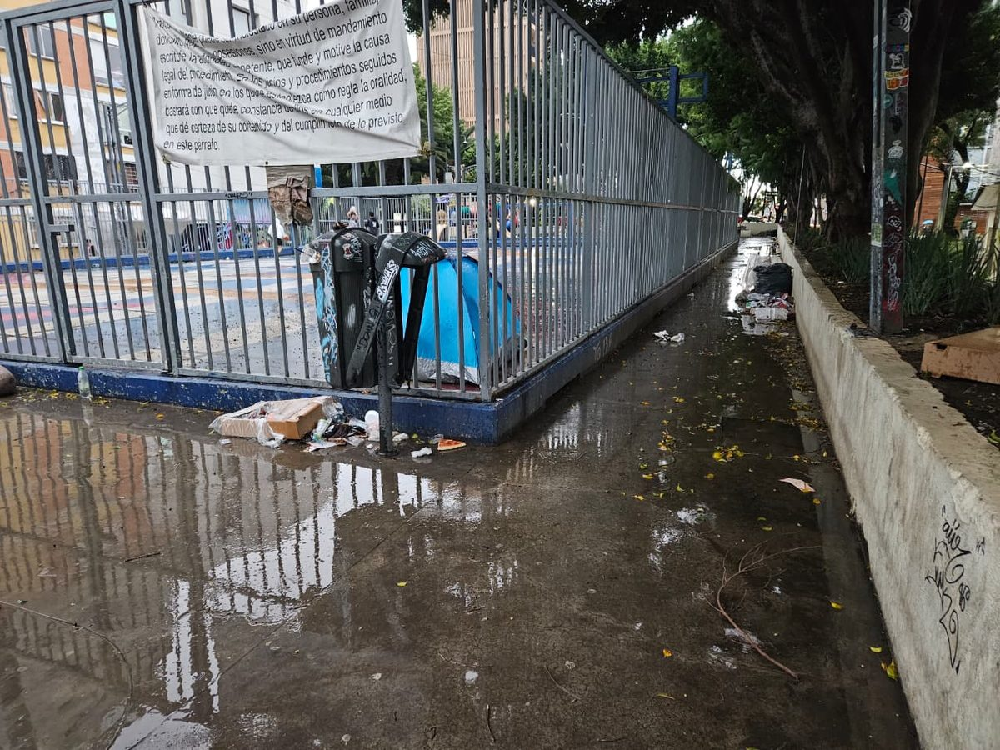
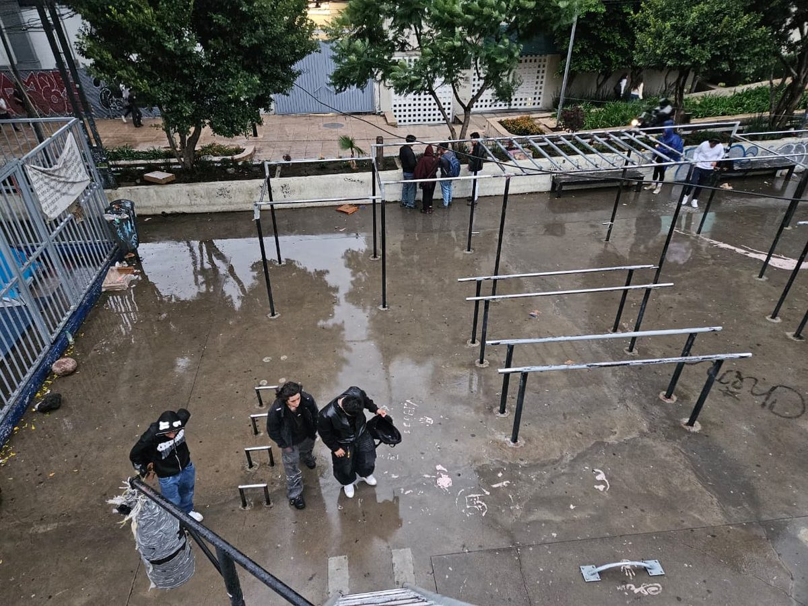
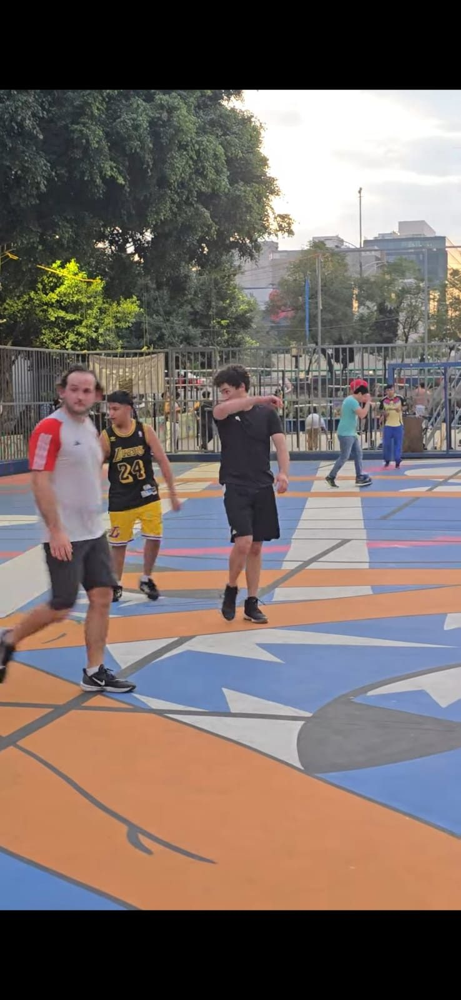

Cientos de personas entrenan aquí cada día, a cielo abierto. Cuando llueve, el espacio se inunda y se pierde. Empecemos por lo primero: techarlo.
Varios ciudadanos, con ideas y estilos distintos, coinciden en algo: este lugar merece estar mejor. En vez de esperar a que alguien más lo resuelva, la comunidad se organizó para renovarlo por su cuenta. Y hay un acuerdo claro sobre por dónde empezar: el techo.
El techo es lo que convierte a las Barras en un espacio usable todo el año, llueva o truene. Es la mejora que más impacto tiene por peso invertido y la base sobre la que tiene sentido construir cualquier otra cosa. Por eso es la prioridad máxima del proyecto y el único objetivo de la primera campaña de recaudación.
Queremos demostrar que una iniciativa ciudadana puede mejorar un espacio público. El techo es la prioridad; a partir de ahí, empujaremos hasta donde se pueda para que este sea un lugar digno donde la gente quiera estar.
Un proyecto ciudadano se sostiene entre muchas manos. Este espacio también sirve para reconocer a quienes aportan: conforme se sumen más personas y negocios, sus nombres aparecerán aquí.
Coordina el proyecto en el día a día.
Funge como patrocinador fiscal: recibe y administra los donativos con transparencia y emite recibos deducibles de impuestos.
Alcaldía Cuauhtémoc y, según el caso, el Gobierno de la Ciudad de México. Su papel es otorgar permisos y acompañar el proyecto; no administra los recursos.
Quienes hacen técnicamente posible la obra y el entorno.
Quienes usan y sostienen el espacio día con día, incluyendo grupos deportivos como Team Majin y otros.
Influencers y negocios que se suman para impulsar el proyecto.
Avanzamos paso a paso, cumpliendo lo que prometemos antes de dar el siguiente. Hoy todo el esfuerzo está puesto en una sola cosa: el techo.
Aterrizar el proyecto del techo con un ingeniero civil y arquitectos, definir la ruta de permisos con la autoridad y obtener el costo real de la obra. Es la etapa en la que estamos hoy.
Construir una cubierta que proteja el área de barras del sol y la lluvia, para que el espacio pueda usarse durante todo el año. Es la meta inmediata y el destino de la primera campaña de donación: el 100% de lo recaudado se destina a esta etapa.
De concretarse el techo, se buscará continuar —en la medida de lo posible— con mejoras como:
Estas etapas se definirán a detalle únicamente cuando la Etapa 1 sea una realidad.
La confianza es la base de un proyecto ciudadano. Por eso el manejo de los recursos es claro y verificable desde el primer peso.
Los donativos no los administra el comité en lo personal. Los recibe y administra una Asociación Civil que funge como patrocinador fiscal, lo que permite un manejo ordenado y auditable, y emitir recibos deducibles de impuestos por cada donativo.
La autoridad correspondiente —por ahora, la Alcaldía Cuauhtémoc— no recibe ni administra los fondos. Su papel es otorgar los permisos necesarios y acompañar el proyecto en lo que esté a su alcance.
Documentamos las condiciones actuales de las Barras. Conforme el proyecto avance, iremos sumando aquí las fotos del después.






Tu apoyo pone el primer techo. Suma, comparte y ayúdanos a que las Barras de Insurgentes sean un mejor lugar para toda la comunidad.